Информатор
Информатор
Техничкe школе "Колубара"

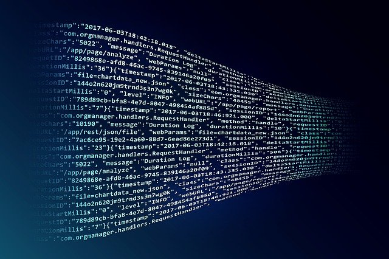
Бићете упознати са основама неколико програмских језика. Имаћете прилику да креирате и дизајнирате сајтове. Уче се програмски језици као што су C, javaScript, SQL, HTML, CSS... Развићете неизбрисиву програмерску логику.
Научићете шта су рачунарске мреже, како да повезујете рачунаре и одржавате рачунарске мреже и арчунарске системе.
Од хардвере, до софтвера и целокупног вођења техничке документације проћи ћете кроз четворогодишње школовање на смеру електротехничар рачунара.
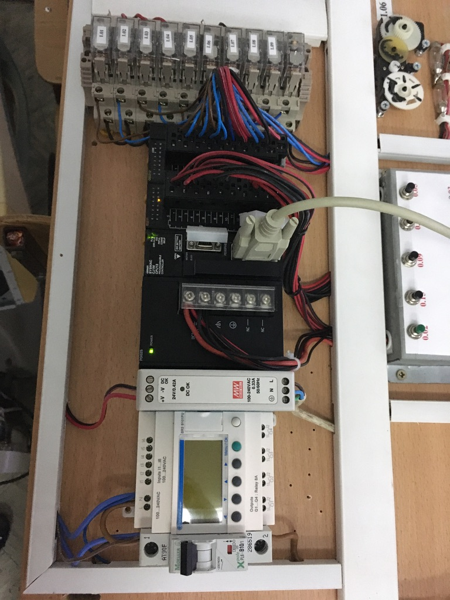
Образовни профил Техничар мехатронике оспособљава ученике за рад у једној од веома тражених области данашњице. Мехатроника је дисциплина која представља савршени спој машинства, електротехнике, аутоматике, програмирања и информационих технологија.
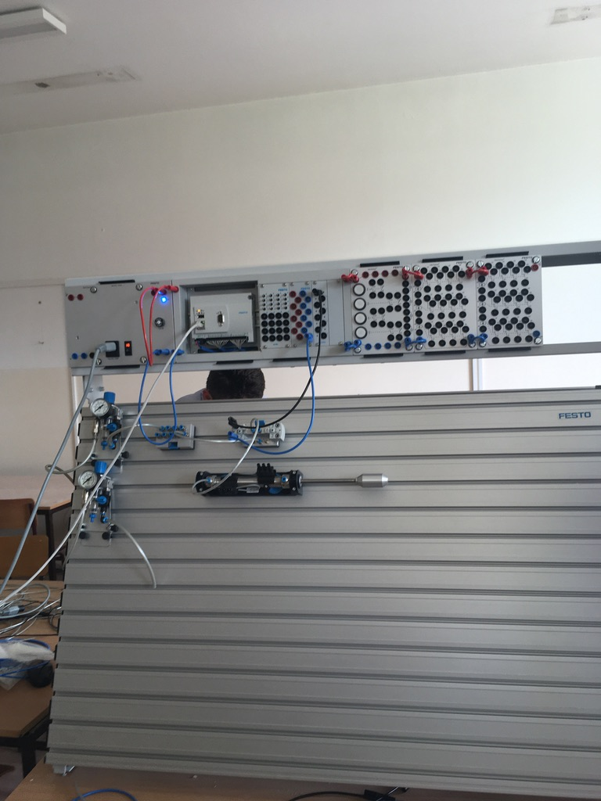
Циљ стручног образовања за квалификацију ТЕХНИЧАР МЕХАТРОНИКЕ је оспособљавање лица за монтирање компонената, дијагностиковање кварова, поправка и одржавање опреме и мехатронских уређаја и система.
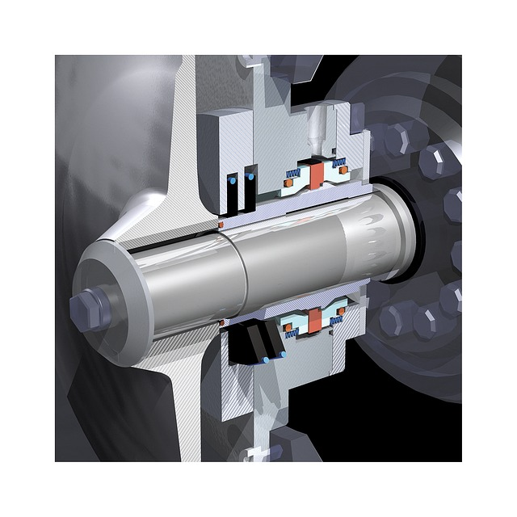
Након завршеног средњег образовања, техничар мехатронике ће бити у стању препозна, локализује и отклоните квар. Моћи ће да препознате да ли је квар у некој елктричној, електропнеуматској, пнемуматској, хидрауличној компоненти или у контролеру или у неком механичком делу.
Проучаваћете законитости на којима се темељи роботика. Упознаћете се са аутоматизацијом процеса у фабрикама. Роботи и манипулатори се највиђе примењују за паковање производа, послове заваривања, фарбања и на многим другим местима.

Главна примена је у аутомобилској индустрији, производњи мобилних телефона, лаптопова, медицинске опреме али и једнсотавних производа попут електромотора, пумпи, кућних апарата.
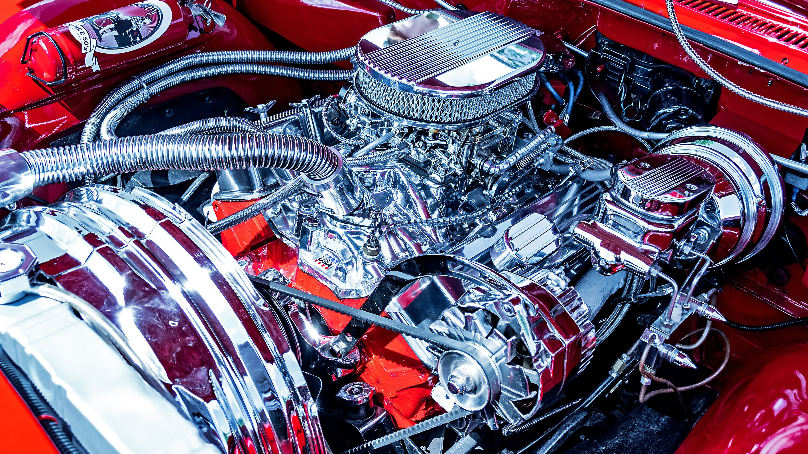
Аутоелектричари одржавају електричне и електронске уређаје и инсталације у аутомобилу, монтирају и демонтирају расвету аутомобила и регулишу паљење. Дијагностикују квар на електронској опреми аутомобила и отклањају га заменом електронског склопа. Пошто модерни аутомобили имају све више електронски регулисаних функција, примена основних знања електротехнике и електронике на електричне и електронске уређаје у аутомобилу кључна је у овом занимању.
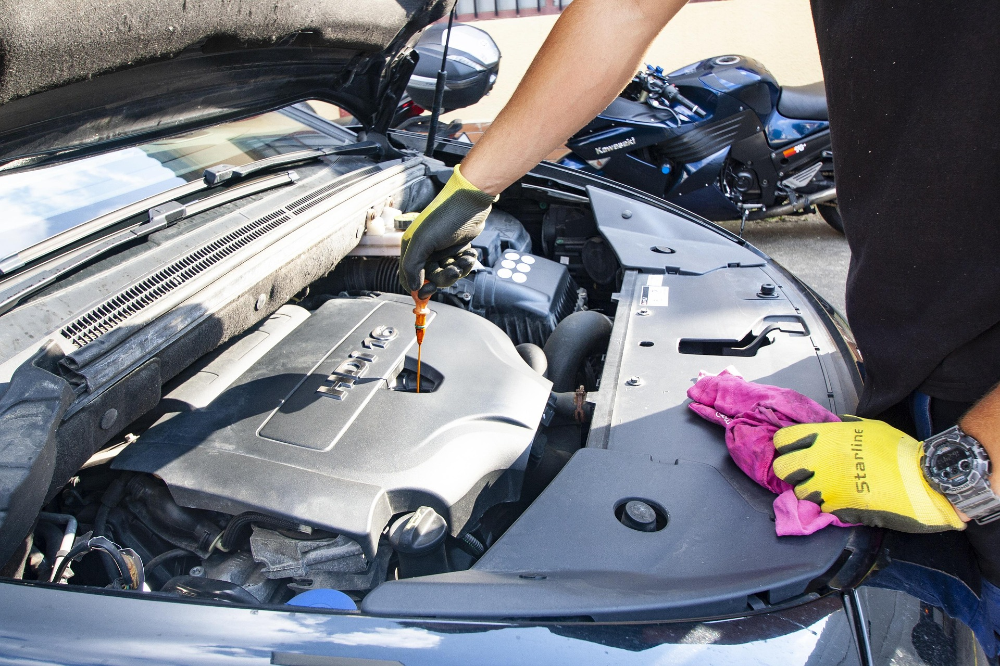
Аутоелектричари познају принцип рада електронских система и њихов је посао замена таквих система новима. Електрични уређаји које поправљају и монтирају су светла и комплетна саобраћајна сигнализација и електрични склоп паљења аутомобила. Поред препознавање електронских кварова, оспособљени су и за испитивање и замену електронских компоненти.
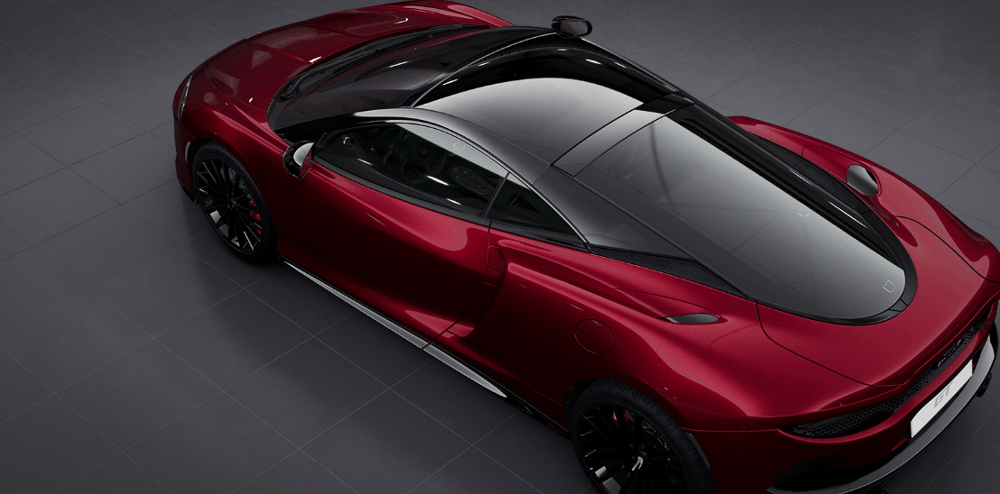
Предвиђа се да ће убудуће у аутомобилима бити све више електронике, тако да је непрестано учење нових технологија важан део занимања.
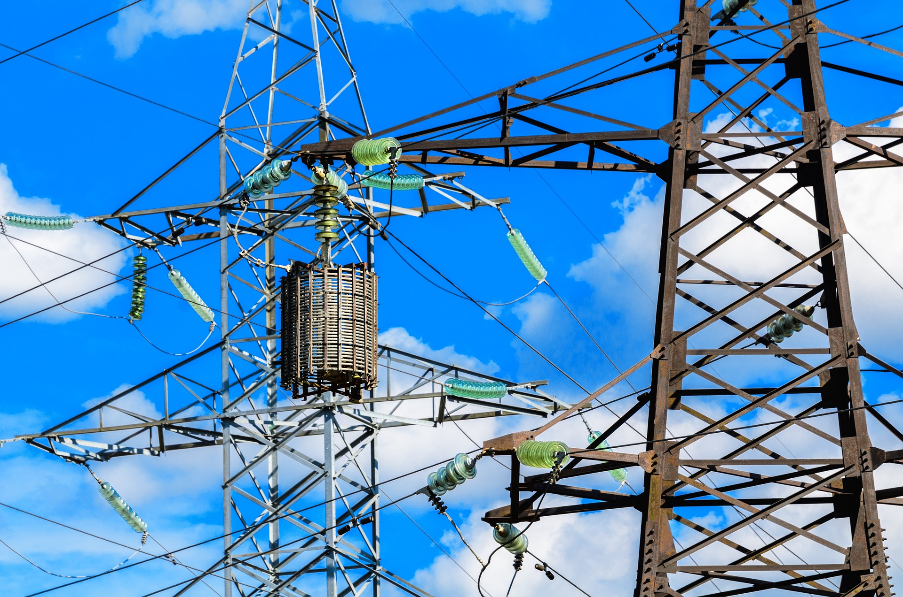
У оквиру образовног профила Електричар, ученици стичу знања из области пројектовања и извођења електричних инсталација.
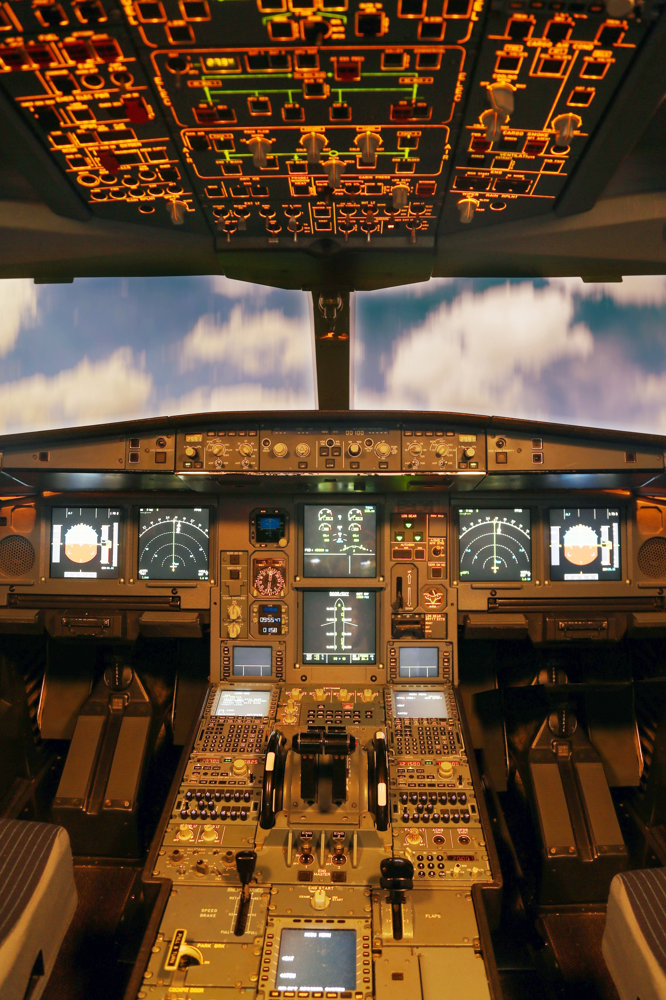
Такође се стичу знања везана за одржавање и поправку електричних кућних апарата и уређаја.
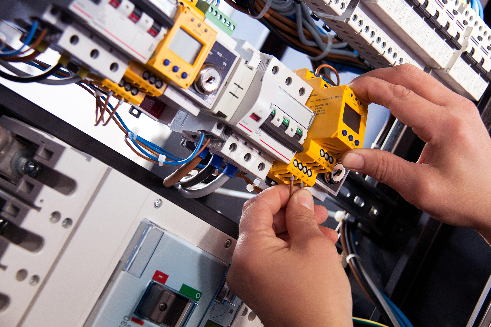
Свака кућа, свака зграда, све што се ново зида чека доброг електричара.
Електротехничар процесног управљања програмира рачунаре да управљању процесима као што су грејање и хлађење, рад сигурносних и алармних уређаја, рад семафора, контрола и паковање производа, изазивање сценских ефеката итд. Ови системи се примењују у многим областима производње, контроле, надзора и одржавања.
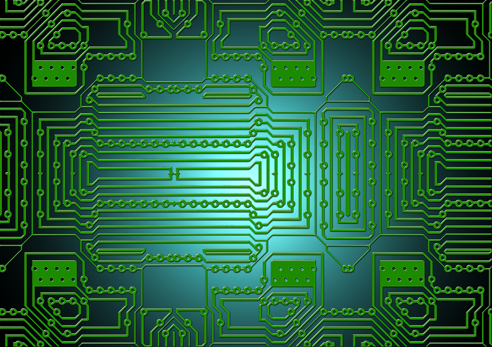
То су на пример електропривреда, погони у индустријској производњи, разни објекти за регулисање и контролу саобраћаја, медицинске установе, установе културе и забаве, хотели итд. Програмирају и микрорачунаре уграђене у различите дисплеје, билборде, камере, мобилне телефоне, алате и друге уређаје. Потребно је да добро познаје и примењује електротехнику и најсавременија техничка достигнућа из електронике, рачунарске технике, аутоматског управљања и регулације за рад у свим гранама привреде.
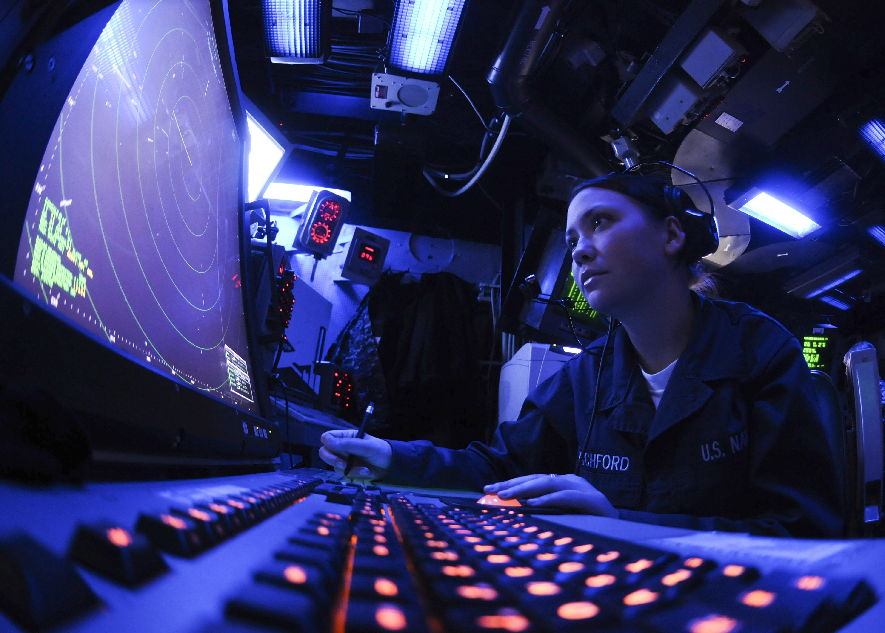
Смер процесног управљања обухвата следеће области које се изучавају током школовања: електроника и енергетска електроника, електричне машине и постројења, електричне инсталације, елементи аутоматизације и аутоматског управљања, микроконтролери, програмабилни логички контролери, рачунарско управљање и програмирање, управљање електричним погонима, примена рачунара.
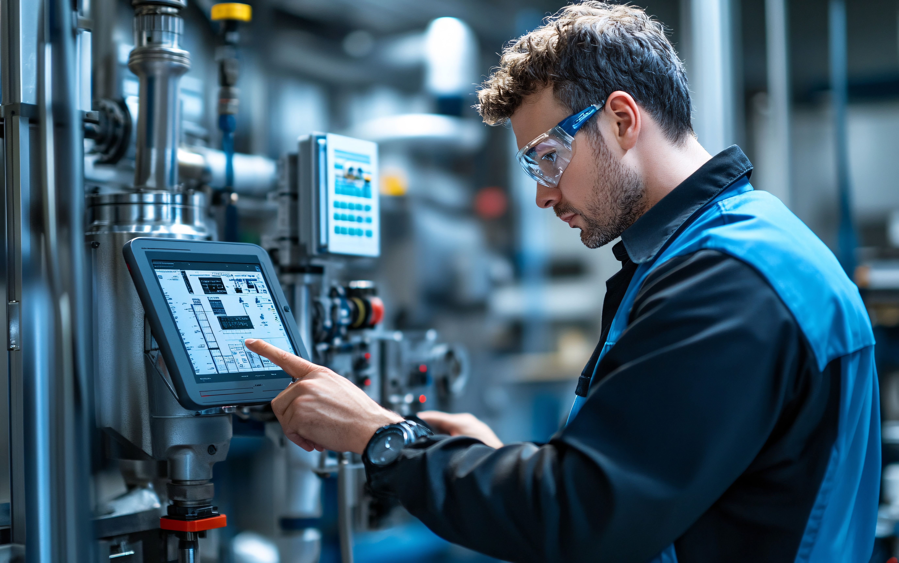
Прве две године изучавају се општи предмети и група општестручних предмета (основе електротехнике, електроника, примена рачунара). Трећа и четврта година се састоји од ускостручних предмета, подељених на теоријске часове и практични део. У практичном делу организују се лабораторијске вежбе а предвиђена је и блок-настава, где се по потреби организују посете фирмама или предузећима која користе елементе процесног управљања.